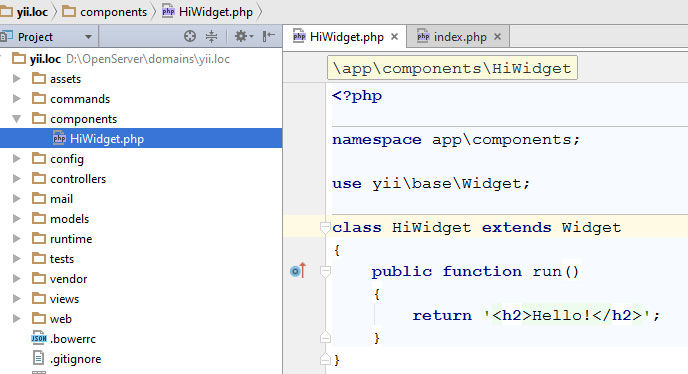
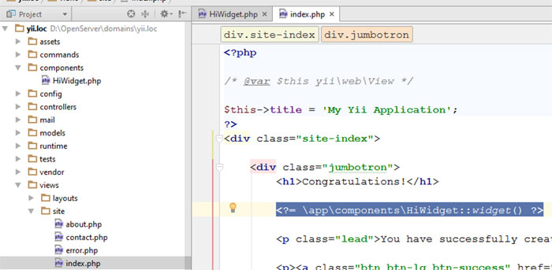
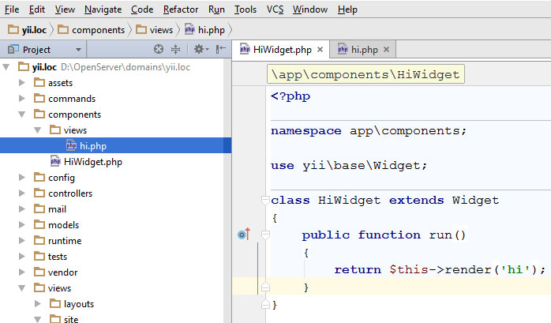

От автора: приветствую вас, друзья. Мы продолжаем цикл статей, посвященных знакомству с фреймворком Yii2. В данной статье мы познакомимся с таким понятием фреймворка Yii, как виджеты. В Yii2 виджеты позволяют избежать повторения кода и могут быть использованы многократно в различных представлениях. Давайте же рассмотрим примеры создания простейшего виджета.
Итак, виджеты – это некоторые компоненты, которые предназначены в первую очередь для реализации элементов интерфейса и которые можно использовать многократно. Классическим примером такого элемента может быть меню. Меню используется практически на каждой странице вашего сайта и от страницы к странице остается неизменным. То есть, от страницы к странице мы должны повторять один и тот же код для получения меню и его вывода. Но благодаря виджетам мы можем избежать этой утомительной процедуры и создать меню только один раз, а затем просто вызывать его.
В Yii2 уже имеется большое количество различных виджетов: для создания форм, меню, jQuery UI и другие. Кроме того, фреймворк позволяет нам создавать собственные виджеты. Давайте на простом примере разберем создание простейшего виджета.
Создаются они в папке components, которую мы можем создать в корне приложения. Для создания виджета мы должны унаследовать класс yii\base\Widget. Внутри класса виджета мы можем переопределить методы init и run. Также можем создавать и собственные методы. Метод init, как правило, используется для нормализации свойств виджета (установка значений), а метод run возвращает результат рендеринга. Результат можно вывести с помощью echo или вернуть через return.
Давайте создадим простой пример виджета, который будет приветствовать посетителей сайта.
class HiWidget extends Widget
{
public function run()
{
return '<h2>Hello!</h2>';
}
}

Теперь попробуем вызвать созданный виджет в представлении. Для этого необходимо обратиться к созданному классу и вызвать статичный метод widget.
<?= \app\components\HiWidget::widget() ?>

В результате на странице мы увидим выводимую приветственную строку. Что здесь может смущать? Пока что у нас всего одна строка и мы просто поместили ее в метод run. А что если мы формируем большое меню – например mega menu? В этом случае у нас будет много кода HTML. Но это не проблема. Yii предлагает нам создать рядом с классом виджета папку views, в которую и поместить представление для виджета. Само представление можно вызвать методом render. Давайте попробуем.
Создадим вид hi.php:
<h2>Hello!</h2>
А в методе run вернем его:
public function run()
{
return $this->render('hi');
}

На выходе мы получим все тот же вариант. В итоге мы с вами создали самый простейший вариант виджета, который можно использовать сколь угодно много раз. На самом деле данная тема далеко не ограничивается этими знаниями. Виджеты могут быть куда как сложнее, они могут быть настраиваемыми, то есть в них можно передавать параметры. Но это тема уже отдельной статьи. Мы же на этом пока что остановимся. Больше о фреймворке вы можете узнать из наших бесплатных или платных уроков. Также создание простейшего блога на Yii2 можно посмотреть в этом цикле уроков.